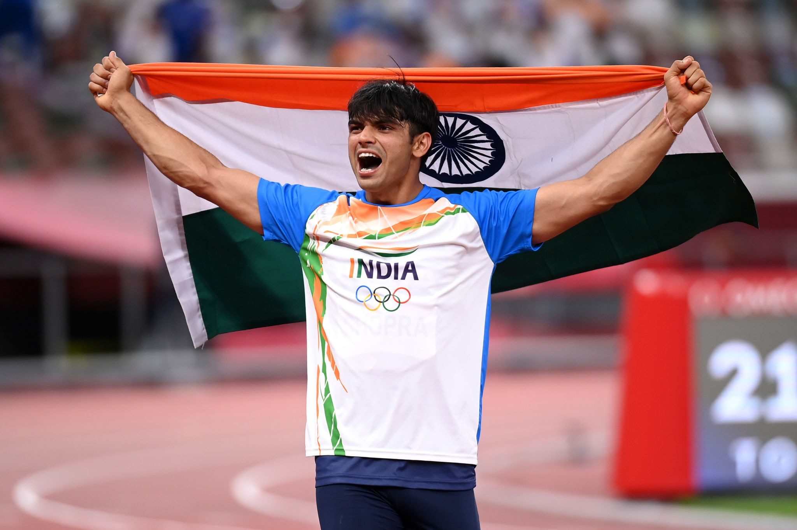
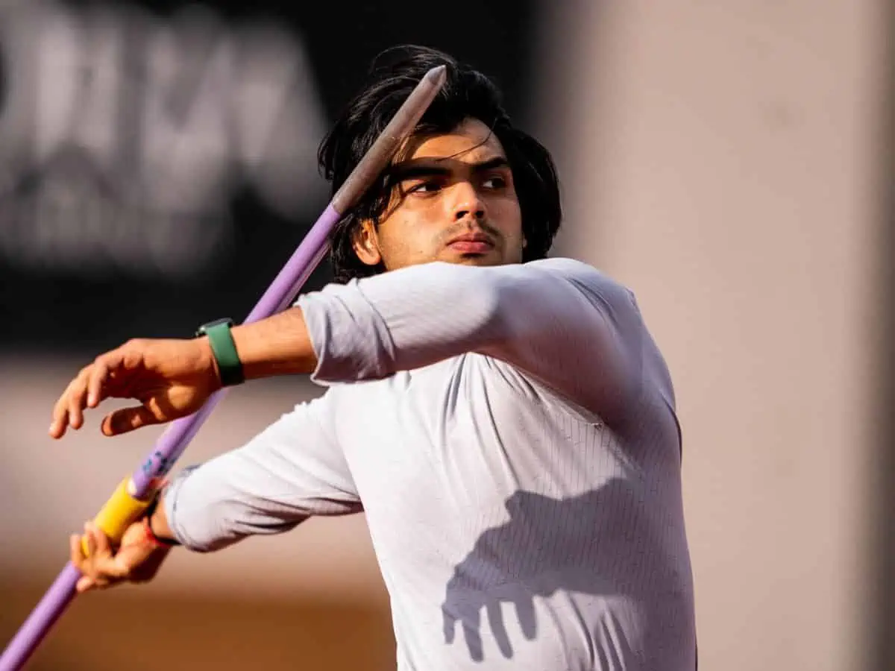
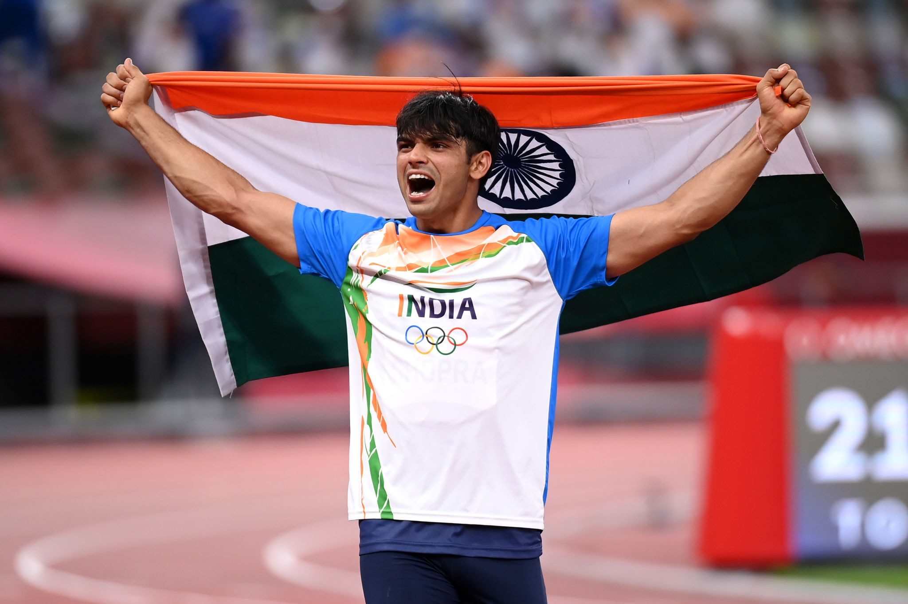
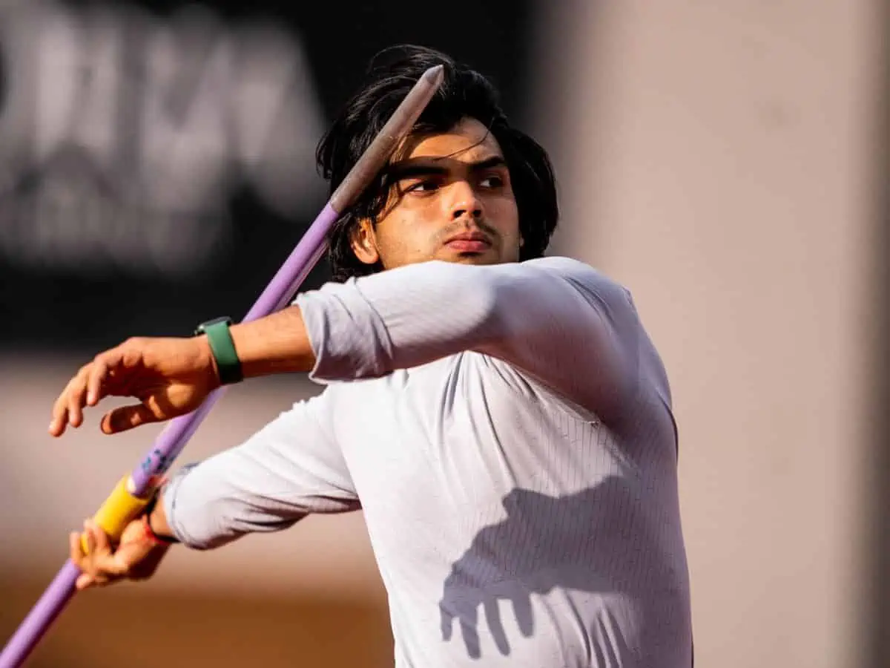

Neeraj chopda
Golden Boy Neeraj Chopra :
Javelin thrower Neeraj Chopra, who made history on August 7, 2021 by winning India's first-ever gold medal in athletics at the Tokyo Olympics, was born on December 24, 1997 to a family of farmers from Khandra village near Panipat in Haryana. He graduated from Dayanand
Early life and education :
Neeraj Chopra was born in a Haryanvi Ror family in Khandra, a village in Panipat, Haryana. He has two sisters and his family is largely involved in agriculture. He did his schooling from BVN Public School. He graduated from Dayanand Anglo-Vedic College in Chandigarh, and as of 2021, was pursuing a Bachelor of Arts from Lovely Professional University in Jalandhar, Punjab. Impressed with Chopra's performance at the South Asian Games and his future potential, the Indian Army offered him a direct appointment as a Junior Commissioned Officer (JCO) in the Rajputana Rifles with the rank of Naib Subedar. He accepted the offer and joined the army under sports quota. Athletics
International beginnings :
In 2013, Neeraj Chopra entered his first international competition, the World Youth Championships in Ukraine. He won his first international medal in 2014, a silver at the Youth Olympics Qualification in Bangkok. He achieved his first throw of over 70 metres at the 2014 senior nationals. In 2015, Chopra broke the previous world record in the junior category, throwing 81.04 metres in the 2015 All India Inter-University Athletics meet; this was his first throw of over 80 metres.